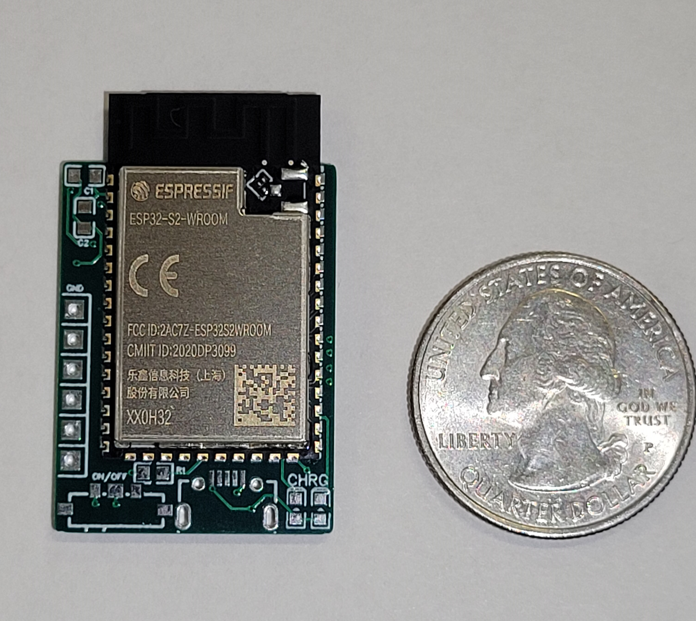
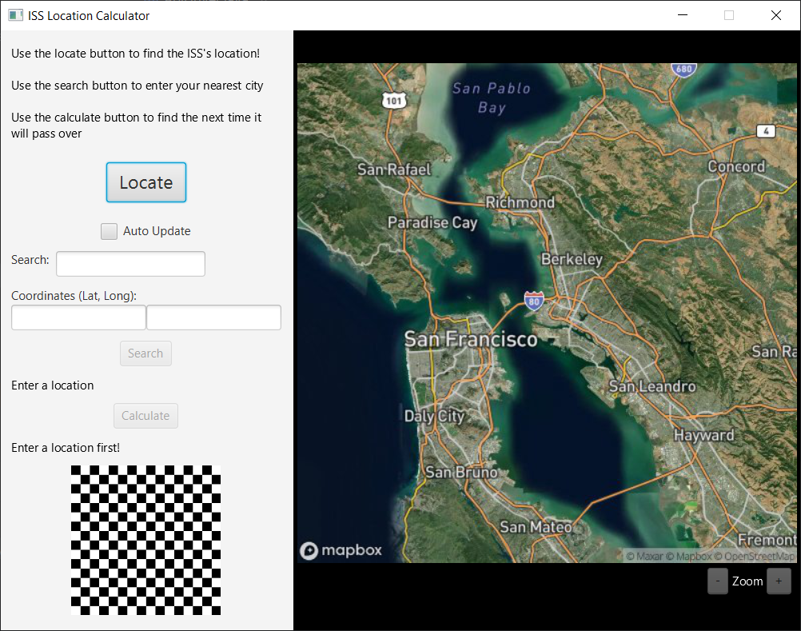

Projects

Micro-Grid Wind Power Generator
- Control circuit design and patent application
- Designed and prototyped a city-scale wind turbine
- Selected and assembled discrete components in Eagle EDA

Concussion Detecting football helmet
- uses advanced gyroscopes and force sensors to detect incoming hits
- wirelessly transmits data to a laptop on the sidelines
- our program tracks and processes data from the chip, to detect a concussion level hit

ISS Tracker App
- Interfaces with various API's to get the position of the ISS
- calculates the next orbital flyover using OREkit
- Uses openstreet map to plot your position and the current position of the station